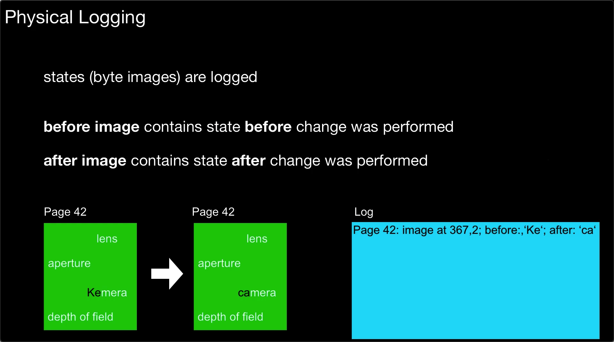
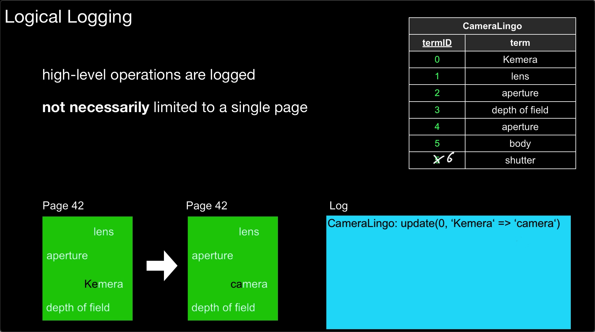
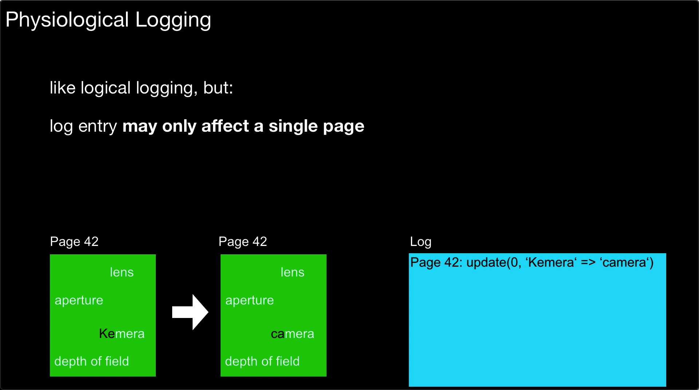
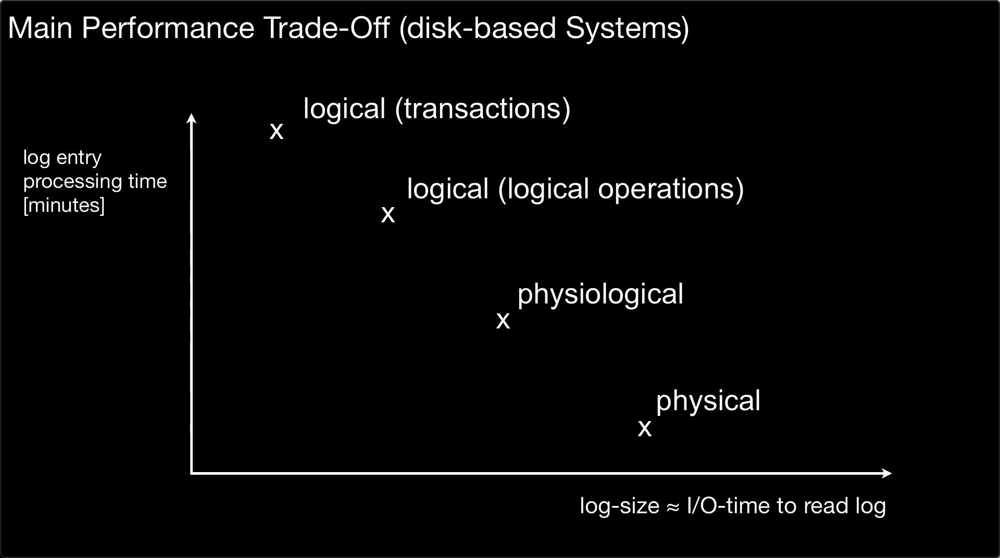
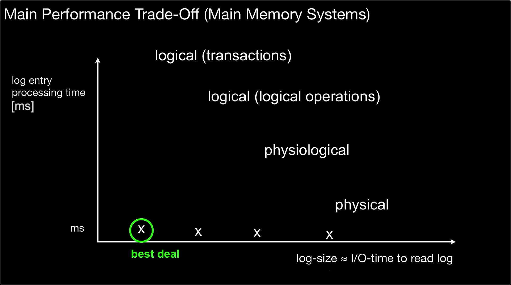

逻辑日志与物理日志
文章目录
Thanks to Prof. Dr. Jens Dittrich’s teaching video.
日志主要分为逻辑日志以及物理日志：
- 逻辑日志 Logic log[1]；
- 物理日志 Physical log[2]；
1. 物理日志与逻辑日志的存储内容
1.1 Physical Logging
物理日志与逻辑日志在存储内容上有很大的区别，存储内容是区分它们的最重要手段。
物理日志：
- 存储内容：存储数据库中特定记录的变更，通常是 page oriented，即描述具体某一个 page 的修改操作；
- 例子：一条更新请求对应的初始值（original value）以及更新值（after value）；
逻辑日志：
- 存储内容：存储事务中的一个操作；
- 例子：事务中的 UPDATE、DELETE 以及 INSERT 操作。
下图是一种典型的物理日志：

figure1.典型的物理日志
我们可以看到，更新操作作用于 Page42，将字段 “Kemera” 修改为 “camera”。更新操作对应的日志为：
|
|
其中：
- Page 42 用于说明更新操作作用的 page；
- 367：用于说明更新操作相对于 page 的 offset；
- 2：用于说明更新操作的作用长度，即 length，2 代表仅仅修改了两个字符；
- before:‘Ke’：这里表示 undo information，也可以称为 undo log；
- after:‘ca’：这里表示 redo log information，也可以称为 redo log；
当然，一条物理日志可以有多个字段的修改，下面是一个抽象版本：
|
|
注意事项：
- 物理日志实际上以字节编码落盘，而不是字符编码，因此通常肉眼不可见；
- image 的含义通常指代镜像，但这里不是说对 page 做整个镜像，而是对更改或增量（change/delta）操作做镜像，before image 代表写操作作用之前的字段副本，after image 代表写操作作用之后的字段副本；
可见，physical log 中的一条记录对应于状态机（state mechine）上某一个 page 上的某些字段做了什么改动的落盘。
1.2 Logical Logging
逻辑日志又被称为 high-level logging，这是相对于物理日志而言的。
下图是一个典型的逻辑日志：

Figure2.典型的逻辑日志
在上图中，有一张 CameraLingo 表，我们试图纠正 itermID 为 0 的拼写错误，即将 “Kemera” 修改为 “Cemera”。逻辑日志的格式如下：
|
|
逻辑日志被称为 high level 的原因是其更抽象，其不需要指明更新操作具体作用于哪一块 page，因此也对底层少了一些限制。如果利用物理日志进行宕机后的数据恢复，那么需要确保 page 不能够改变，但利用逻辑日志并不在乎底层 page 是否改变。
熟悉 MySQL 的同学可以发现逻辑日志与一条 SQL 语句非常类似，事实上确实如此，逻辑日志的本质就是对更新语句（update query）本身的落盘。在本节的例子中，只需要指明在哪一张表上的哪一行，对哪一些字段进行什么修改即可。逻辑日志不用物理上的 page，而用逻辑上的表。
另一方面，得益于 high level 的抽象，一个逻辑日志可以对应多条物理日志，下面举一个例子：
|
|
上述逻辑日志的语义是对 CameraLingo 表中所有 term 字段对应的属性首字母大写，如果表足够大，此次逻辑日志涉及多个 page 上的修改，因而需要多个物理日志。
需要指出的是 high level 的数据结构抽象不仅仅局限于 table，例如 key-value 也是一个典型的 high level 数据结构。
1.3 Physiological Logging
除了物理日志以及逻辑日志，还有一种日志被称为 Physiological Logging[3]，其试图同时获得物理日志与逻辑日志的优势。
下图是一个典型的 Physiological Logging：

Figure3.典型的 Physiological Logging
Physiological Logging 的格式也可以如下表示：
|
|
其中，Page ID、Record Offset 的设计源于物理日志。(Field1,Value1) 的设计来源于逻辑日志。
Physiological Logging 的特点是：
- 与物理日志相同，更新操作相对于 page 进行，每一条日志仅仅涉及一个 page 的修改；
- 与逻辑日志相同：日志内容为更新语句（update query）本身，而不是状态机某些字段更新前后的状态。
2. 物理日志与逻辑日志的比较
2.1 事务并发控制
什么是事务并发控制，为什么需要事务并发控制？
我们需要使用事务并发控制的原因基于以下事实（以 MySQL 为语境解释）：
- 事务由 SQL 语句构成，每一个 SQL 语句可分解为多个不可分隔的读/写操作；
- 事务的执行实际上是一连串不可分割读写操作的执行；
- 事务调度器负责调度不可分割读写操作的执行顺序，它们可能来自于不同事务；
- 事务并发控制的一个目标就是实现并行化事务；
逻辑日志很难实现一致的事务并发控制。由于逻辑日志难以携带并发执行顺序的信息，当同时有多个事务产生更新操作时，数据库内部会将这些操作调度为串行化序列执行，需要机制来保障每次回放操作的执行顺序与调度产生的顺序一致。
另一方面，物理日志本身就是存储就是基于不可分隔的更新操作，因此其存储先后顺序就代表了执行器的调度顺序。而且由于很容易判断两个 page 是否是同一个 page，如果不是，完全可以安全并行地并行执行。
为了实现宕机前后事务并发控制的一致性，数据库选择使用 Physical Logging 作为其 Redo Log。
2.2 幂等性
幂等性在日志上的语义是：无论日志回放多少次，最终得到的结果保持一致。
物理日志能够做的幂等性，因为其本质是对状态机某一个字段在更新前后状态的记录，无论执行多少次，最终得到的状态总是相同的。下面是一个例子：
|
|
逻辑日志并不能够提供幂等性的语义，因为某一个更新操作本身不具备幂等性。例如：
|
|
如果 age 的原值为 0，如果执行一次，那么 age 更新为 1。如果执行两次，那么 age 更新为 2。
当然，如果更新操作本身是幂等的，逻辑日志也可以是幂等的，例如：
|
|
上述逻辑日志无论回放多少次（至少一次），最终得到的结果也就是将首字母大写。
2.3 数据量大小
逻辑也不是一无是处，其在日志数据量上占优。
来自客户端的一条更新语句可能会对应多个 page 上的更新，因此逻辑日志与物理日志在日志数量上有巨大的区别。
|
|
别小看！日志数据量大小是特别重要的特性，其对以下过程都有影响：
- 磁盘 I/O 吞吐量；
- 落盘文件大小；
- 网络带宽；
这里的重点是网络带宽。分布式系统会通过 primary 副本向 secondary 副本发送日志的方式来进行分布式事务的维护，因此使用物理日志进行传播就不合适。例如，MySQL 就选择逻辑日志进行维护分布式事务。
2.4 日志重放效率
逻辑日志比物理日志在重放时有着更低的效率，这主要有两个方面的原因：
- 额外的解释步骤：逻辑日志需要额外地解释更新语句、额外查找实际 page 位置；
- 物理日志可以并发进行：当系统判断两个物理日志作用域不同的 page 时，就可以进行完全的并行处理，而逻辑日志通常只能串行执行。
2.5 磁盘/内存式日志系统的 trade-off
其次，基于磁盘的存储系统与基于内存的存储系统对逻辑日志以及物理日志有着不同的 trade-off，如下面两张图所示。

figure.基于磁盘的存储系统的日志 I/O 效率与 replay 效率

figure.基于内存的存储系统的日志 I/O 效率与 replay 效率
3. 工业实践与典型案例
3.1 MySQL
MysQL 对存储引擎层以及 sever 提供了不同的日志方案。以 InnoDB 存储引擎为例。
（1）server 层的 bin log
MySQL 的 server 层使用 binlog，其属于逻辑日志[4]。bin log 分为两种类型：
- 基于语句的日志记录（Statement-based logging）：主要记录了该 MySQL 执行语句（包括 inserts, updates, deletes）；
- 基于行的日志记录（Row-based logging）：主要记录了对单个行的修改，其在 MySQL 5.1.5 后引入；
无论是 SQL 更新语句还是行上具体某个修改，都是逻辑日志，因为都没有涉及在具体哪一个 page 上进行修改。
为此，MySQL 提供了三个模式进行配置：
- Statement：基于语句的 binlog 日志记录（statement-based replication-SBR）；
- Row：基于行的 binlog 日志记录（row-based replication-RBR）；
- Mixed：混合模式，通常基于语句，有必要的情况下基于行实现（mixed-based replication-MBR）；
MySQL 从 V5.1.8 开始提供 Mixed 模式，V5.7.7 之前的版本默认是Statement 模式，之后默认使用 Row 模式， 但是在 8.0 以上版本已经默认使用 Mixed 模式了。
MySQL 在 [5] 中指出了上述两种逻辑日志的优缺点。
基于语句的 binlog：
- 优点：
- 技术成熟；
- 数据更少，即使一个更新操作会影响非常多的行。
- 包括任何更新语句，因此可以用于数据库维护人员维护数据库；
- 缺点：并非所有 SQL 语句的执行效果都支持基于语句的复制。例如调动一个函数 now() 来获取系统时间，在不同的机器、时间上重放日志将得到不同的结果；
基于行的 binlog：
- 优点：
- 缺点：
- 数据量相比基于语句的 binlog 要大很多，在备份与恢复上性能较差；
- 丢失了原有 SQL 更新语句，不利于复盘；
（2）数据引擎层的 redo log/undo log
MySQL 的 InnoDB 存储引擎使用 redo log 以及 undo log，它们属于 Physiological Logging，虽然很多人认为其数据物理日志。
MySQL InnoDB 的 redo log 可以分为三种类型：作用于Page，作用于 Space 以及提供额外信息的 Logic 类型。
以作用于 Page 的 redo log 的格式为例：

-
物理上，其使用 Page Number + Record Offset 来指定具体作用于哪一个 page 上的一条记录。
-
逻辑上，使用 Field Number（Field编号）来说明更新操作作用于哪些字段；
3.3 Redis
Redis 是一个内存型 key-value NoSQL 数据库的典型代表。
Redis 基于 AOF（Append Only File）提供持久化机制[7]。
AOF 中的每一条日志代表 Redis 节点接收到的一条写操作，其格式为 Redis 命令格式，因此 AOF 属于逻辑日志。
Redis 基于内存快照（RDB）+check point + AOF 的方式实现持久化。
3.4 Kafka
在关系型数据库看来，日志不是数据本身，例如对于 MySQL 的 InnoDB 存储引擎来说，数据本身是存储于磁盘上的 B+Tree 树，日志是用于确保单机事务以及分布式事务的一种手段。换言之，关系型数据库提供的读 API 不是直接读日志，而是读 B+Tree。
但是对于 Kakfa 而言，日志本身就是数据本身。因此就没有必要将这类数据库分为逻辑日志与物理日志。Kakfa 的日志一方面服务于单机事务与分布式事务，另一方面服务于消息的读/写 API。
根据 [8]，我们可知，Kakfa 消息包括如下重要字段：
| 字段 | 含义 | 字段 | 含义 |
|---|---|---|---|
| offset | 偏移量 | value length | value 长度 |
| magic | 魔数，区分版本 | value | value |
| crc332 | 校验码 | timestamp | 时间戳 |
| attributes | 表示压缩类型 | ||
| key length | key 的长度 | ||
| key | key |
总之，当日志本身就是数据而不是描述更新操作时，不需要将日志区分为逻辑日志与物理日志。
REFERENCE
- [1] What is the logical log?
- [2] Physical logging, checkpoints, and fast recovery
- [3] What to log, Physical, Logical, and Physiological Logging, Trade-Offs…
- [4]MySQL :: MySQL Internals Manual :: 20.1 Binary Log Overview
- [5]MySQL :: MySQL 8.0 Reference Manual :: 17.2.1.1 Advantages and Disadvantages of Statement-Based and Row-Based Replication
- [6]庖丁解InnoDB之REDO LOG
- [7]Redis Persistence – Redis
- [8]A Guide To The Kafka Protocol